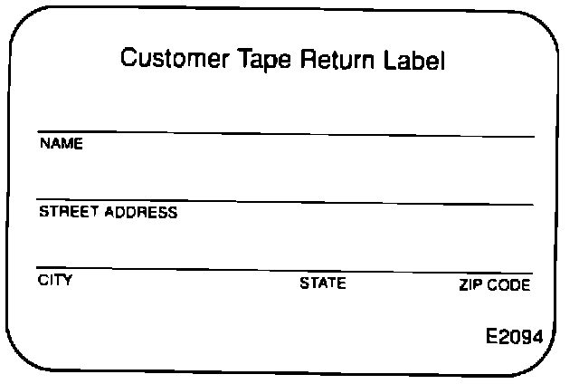

Tape Player - Warranty Extension
June 3, 1991BULLETIN NO.
90-015
YEAR
1990
MODEL
LEGEND
VIN APPLICATION
4-Dr, STD & L
Legend Tape Player Warranty Extension
(Supersedes Legend Tape Player Operation, 90-015, dated July 23, 1990)
SYMPTOM
Tape player either will not accept a tape, or will not eject a tape.
PROBABLE CAUSE
The photoreflector is defective; this part senses whether or not there is a tape in the player.
CORRECTIVE ACTION
1. Exchange the radio. See Service Bulletin 87-015, Radio Exchange Program, issued 5-28-91. If the tape will not eject, continue through steps 2 and 3.
NOTE:
All replacement radios shipped through the Radio Exchange Program will have a redesigned photoreflector regardless of their original defect.
2. If the tape will not eject, do not forcefully remove it. Leave it in the player.

[NEW]
3. Complete a Tape Return Label, reorder # E2094, and attach it to the vendor claim form. The tape will be removed safely during the repair process and the label will be used to send the tape to the customer.
WARRANTY INFORMATION [NEW]
In warranty:
An extended warranty, 5 years or 60,000 miles, applies for this defect only.
Out-of-warranty:
Any repair performed after the extended warranty expires may be eligible for goodwill consideration by the District Service Manager. You must request consideration, and get the DSM's decision, before starting work.
Refer to Service Bulletin 87-015, Radio Exchange Program, for complete warranty information.